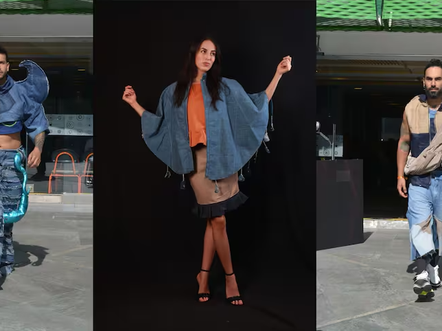
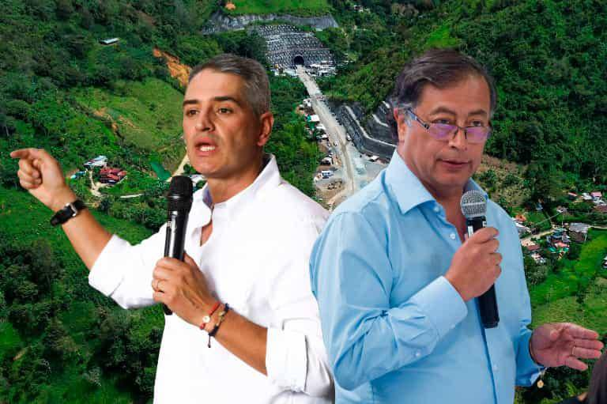
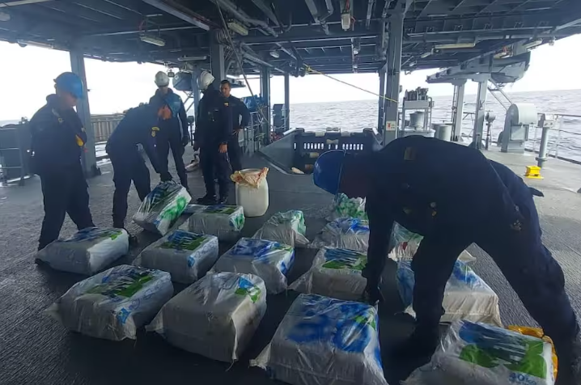
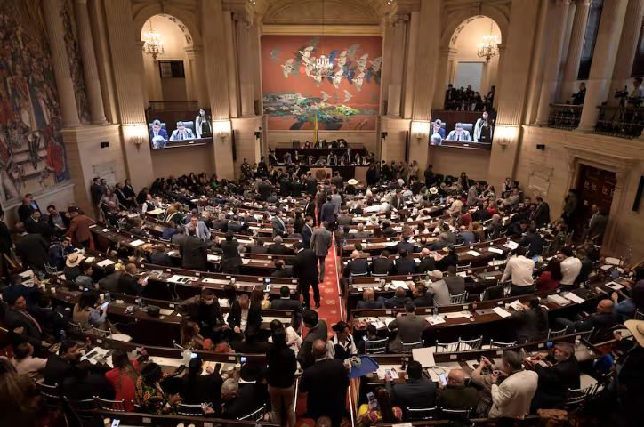
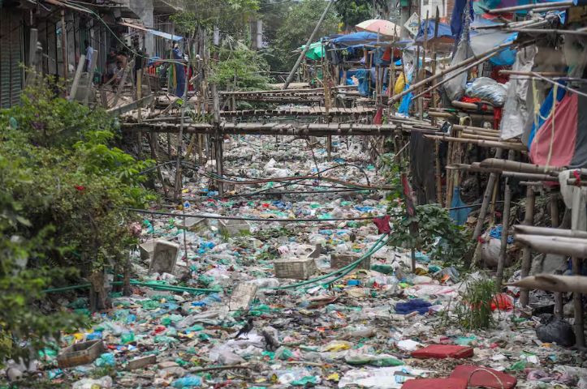
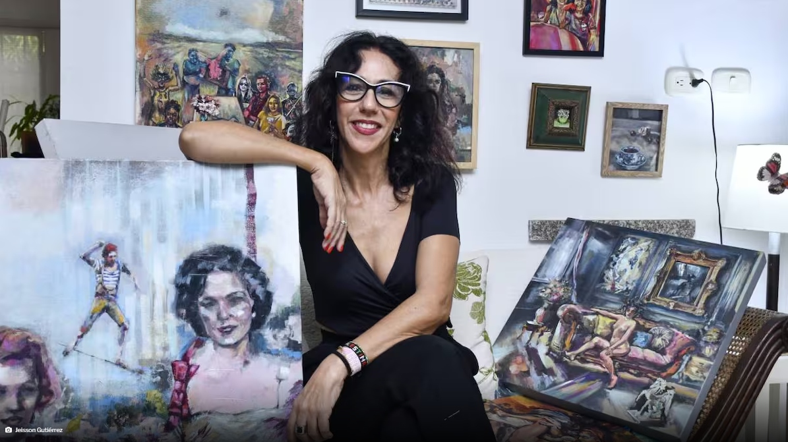
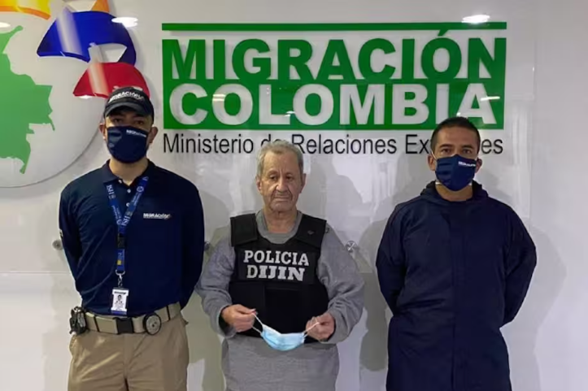
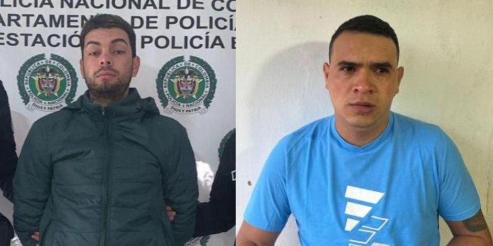

México vs. Costa Rica femenil EN VIVO, hoy 30 de noviembre: hora y canal del amistoso
El 30 de noviembre, México y Costa Rica se enfrentaron en un amistoso de la fecha FIFA en Cancún,
México, como preparación para las eliminatorias al Mundial 2027. México llegó con confianza tras dos
victorias contundentes, mientras que Costa Rica buscaba recuperarse de una derrota ante Panamá. El
historial entre ambos equipos favorece a México con 14 triunfos frente a 3 de Costa Rica. El encuentro
fue transmitido por TUDN y ViX
Rompiendo barreras: joven con discapacidad diseña moda que inspira y transforma
Mateo Barón, un joven diseñador con discapacidad, transforma su pasión por la moda en una fuente de
inspiración y resiliencia. A través de su marca de ropa, enfoca en estilos urbanos y militares, busca
visibilizar las capacidades de personas con discapacidades y demostrar que los sueños son alcanzables.
Con su proyecto “soñadores imparables,” conmemora el Día Internacional de las Personas con Discapacidad,
destacando el poder del empoderamiento y la igualdad de oportunidades. Su historia refleja determinación
y la superación de barreras sociales y estructurales.

La universidad ECCI reinventa toneladas de Jeans y los convierte en moda
La Universidad ECCI ha reinventado más de 1,000 prendas de jeans en su proyecto *ENVIIMODA*,
transformándolas en colecciones de moda sostenibles. Este evento, que se llevará a cabo el 1 de
diciembre en Bogotá, busca promover el upcycling y reducir el impacto ambiental de la moda. Estudiantes
y profesores, junto con donaciones de materiales, han trabajado en este proyecto que abarca desde moda
casual hasta alta costura, brindando a los estudiantes una oportunidad de aprendizaje en prácticas
sostenibles


El gobernador de Antioquia, Andrés Rendón, defendió proyectos clave como el túnel de La Línea y la vía
al mar frente a críticas del presidente Petro, resaltando su importancia para el desarrollo regional y
económico, evidenciando diferencias en las prioridades de inversión entre ambos gobiernos.

La operación internacional Orión, con la participación de 60 países, incautó 225 toneladas de drogas y
desmanteló rutas de narcotráfico global. Durante los 45 días de la misión, se capturaron 434 miembros de
organizaciones criminales, destacándose el papel de la Armada de Colombia y aliados internacionales en
estas acciones.

La controversia en la Cámara de Representantes gira en torno a la inclusión unilateral de la reforma a
la salud en la agenda por parte de su presidente, Jaime Salamanca, sin consultar a los vicepresidentes
Rodrigo Tovar y Lina Garrido. Este desacuerdo llevó al aplazamiento del debate, destacándose la
exigencia de los vicepresidentes de tomar decisiones por consenso.

En Busan, Corea del Sur, representantes de 170 países negocian un tratado internacional para combatir la
contaminación por plástico, abordando el vertido diario de toneladas de plástico en cuerpos de agua. A
pesar de la resistencia de la industria petrolera y química, buscan acuerdos globales para reducir la
producción y la contaminación de este material.

El café colombiano alcanzó un precio récord nominal de 3,47 dólares por libra, igualando niveles de
1977. Sin embargo, en términos reales, el valor debería superar los 9 dólares para equiparar el poder
adquisitivo de esa época. El alza, impulsada por la sequía en Brasil y la incertidumbre geopolítica,
beneficia a los cafeteros, aunque las presiones inflacionarias limitan su impacto económico.
El caso de Juan Felipe Rincón, hijo del Inspector General de la Policía Nacional, involucra su muerte
tras una riña con disparos. Las versiones de los implicados, Sergio Felipe Rico, escolta, y Andrés
Camilo Sotelo, presunto agresor, son contradictorias. Mientras Rico afirma haber actuado en defensa,
Sotelo señala al escolta como responsable. La investigación analiza armas y videos para determinar las
responsabilidades.
En el primer semestre de 2024, las deudas de hospitales y clínicas afiliados a la ACHC aumentaron a 18.9
billones de pesos, con una morosidad del 55%. La Nueva EPS lidera con 4.1 billones, seguida por Medimás
y Sanitas. El gremio solicita al Gobierno medidas urgentes, como compra de cartera y optimización del
giro directo, para garantizar el flujo de recursos.
La Asamblea Nacional de Venezuela aprobó la Ley Simón Bolívar, que impone inhabilitaciones políticas de
hasta 60 años y sanciones para quienes respalden restricciones extranjeras, calificándolas como crímenes
de lesa humanidad. La falta de acceso al texto completo genera controversia e incertidumbre, mientras la
ley refuerza medidas penales contra opositores.
Una explosión de un cilindro de gas en Patio Bonito, Bogotá, dejó dos personas heridas y destruyó una
vivienda. Los bomberos y equipos de emergencia atendieron rápidamente a los afectados y controlaron la
situación. Las autoridades investigan las causas del estallido y las condiciones de la vivienda
afectada.

Elia Abuchaibe, una destacada diseñadora, afirma que el arte y la moda están
profundamente conectados. Su trabajo refleja cómo las influencias artísticas pueden transformar la moda
en una forma de expresión cultural y emocional. En su opinión, la moda no solo responde a tendencias,
sino que también actúa como un medio para transmitir mensajes y sentimientos. Este enfoque artístico se
refleja en sus creaciones, las cuales buscan romper barreras entre el diseño y las diversas disciplinas
creativas.

Los Premios Indie Games celebraron su sexta edición en Málaga el 29 de noviembre,
reconociendo la creatividad y el talento de los desarrolladores de videojuegos independientes. Durante
el evento, se premiaron diversos títulos por su innovación, diseño y jugabilidad. Este evento resalta la
importancia del sector indie y ofrece a los creadores la oportunidad de mostrar sus proyectos al público
y la industria.

La Procuraduría General de la Nación rechazó la designación de 18 exjefes
paramilitares, incluidos Hernán Giraldo Serna, como gestores de paz por parte del gobierno de Gustavo
Petro. Margarita Cabello, procuradora general, expresó que la inclusión de Giraldo, condenado por
delitos sexuales contra menores, "revictimiza y ofende", y no contribuye a la paz. Este rechazo se
enmarca en los nombramientos hechos a mediados de noviembre como parte del proceso de paz en Colombia.

El artículo aborda el uso de solicitudes de asilo en Colombia por miembros del Tren de
Aragua, como estrategia para evitar su extradición a Venezuela, donde enfrentan acusaciones graves, pero
alegan riesgos a su integridad por condiciones del régimen de Maduro. Figuras como Yonayke Martínez y
Jeison Lorca son citadas, enfrentando cargos de extorsión, terrorismo y más. Argumentos legales destacan
el peligro de violaciones de derechos humanos en Venezuela y la tensión entre principios internacionales
y extradición.